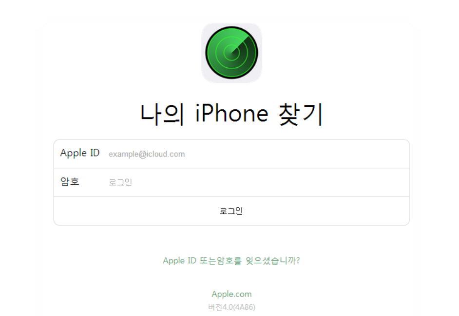
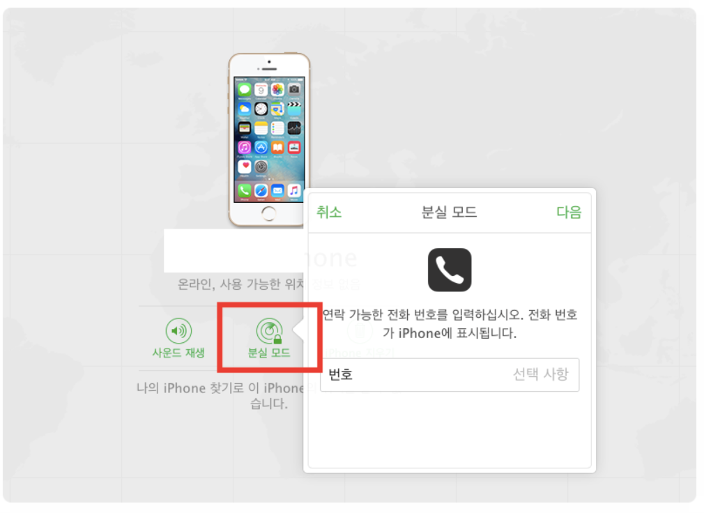

나의 아이폰 찾기 활용
https://www.icloud.com을 통해서 나의 아이폰 찾기 기능을 사용
꼭 아이클라우드는 익스플로러가 아닌 크롬으로 사용하셔야 된다는점! 참고하세요!
크롬을 통해서 아이클라우드에 접속 후,
아이클라우드에서 뒤에 #find라는 단어를 뒤에 붙여줍니다.
https://www.icloud.com/#find 붙여 다시 접속하게 되면,

보안을 위해 로그인을 하라고 나옵니다.
로그인을 하게되면,

이미지처럼 나침반이 나오고 위치 확인 중이라면서 계속 나침반 바늘이 돌아가다가,
위치를 알 수 있는 기기가 없다고 뜨면서 모든 기기가 오프라인으로 나타납니다.

이게 현재 국내에서는 법때문에 위치서비스를 제공하지 않는다 하여서 다 그렇게 나온다고 하네요.

전원도 안 꺼져있는데 인터넷에 연결되어 있지 않으면 오프라인으로 뜬다고 하네요.
온라인 기능이 작동 된다면 사운드 재생이란 프로그램을 이용해서 주위에 같은 아이폰을 들고 사운드 재생을 틀어가면서 알람이 울려 찾을 수 있습니다.

오프라인이라면 그런 프로그램 기능도 별 소용이 없으니 분실모드를 클릭하게 되면 연락 가능한 전화번호를 입력하도록 나와서,
지인 연락처를 입력한 뒤에 전화번호 입력 후에는 아이폰을 켰을 때 메세지를 확인할 수 있도록 메세지를 입력하는 란이 나와서 자기가 하고싶은 메세지를 입력 후에 완료를 누르면,
분실모드 레이더망이 돌아가면서 분실모드 실행 중이라는 표지가 뜨면서 작동이 됩니다.
출처 https://blog.naver.com/youngil25000/221336354936